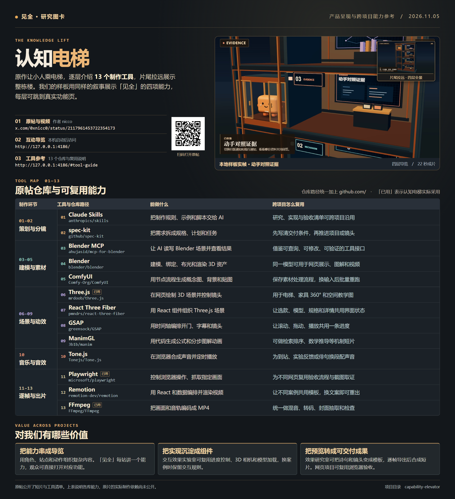

01 / 原作
一支短片，介绍 13 个工具
nicco 的原帖配了一支约 27 秒的 3D 电梯短片。小人逐层上行，每层用楼层牌与布景介绍一个项目，最后拉远露出整栋楼。
看原帖与视频THE KNOWLEDGE LIFT
AI 为什么会答错？
跟着小小访客，看看见全如何带你找到方向、理解机制，再动手验证。
用电梯逐层展示主题。角色上行、逐层停靠，每层介绍一项工具或产品能力，最后用全景展示它们的整体关系。本研究收录四层互动样板、22 秒成片、引导图，以及原帖 13 个工具的能力与复用说明。
RESEARCH NOTES
原作把一张工具清单变成了一段电梯旅程。我们把这种组织方式用到「见全」的四项能力，并验证了同一套网页场景可以生成可分享的视频。
STUDY MAP
沿用本轮生成的研究图卡。图中包含我们的电梯实帧、原帖入口、13 个仓库路径和跨项目复用例子。
图卡制作于 2026 年 11 月 5 日，其中的 127.0.0.1 是本机地址。本页提供可在线体验的导览与工具入口。
保存高清引导图
01 / 原作
nicco 的原帖配了一支约 27 秒的 3D 电梯短片。小人逐层上行，每层用楼层牌与布景介绍一个项目，最后拉远露出整栋楼。
看原帖与视频02 / 链接
13 个链接在原帖正文中，分别通往制作规范、建模、动效、音效与出片工具。进入仓库可以查文档、接口和示例，再按自己的任务选择。
查看 13 项能力与用途03 / 制作过程
原帖引用的指南讨论分镜、按时间定位画面、关键帧检查和导出。指南里的独立示例工程可以用来读制作过程。本轮查阅未找到电梯原片的工程或构建记录，实际用了哪些工具仍待核对。
RUNNING EXAMPLE
以「AI 为什么会答错？」串起找到入口、理解生成、对照证据和跨域阅读。网页可以播放、拖动和直达楼层。本机预览时，每层可进入「见全」对应页面。导出的 MP4 带有合成音轨和到站提示音。
楼层、文案、链接和停靠时间放在数据中。
同一个时间点确定电梯、门、角色和镜头位置。
代码打开浏览器，按帧定位并截取画面。
合成可播放的 MP4，交付到网页下载入口。
SKILLS / SPEC-KIT
把输入要求、任务步骤和验收条件留成模板。「见全」新增图解、实验室新增案例时，可以沿用研究和交付要求。
MCP / COMFYUI
借鉴带参数的操作接口与可保存工作流。商品素材换一批输入后可按原流程处理，3D 场景的批量修改也可查询和预览结果。
PLAYWRIGHT / REMOTION / FFMPEG
用浏览器操作和截图核对网页，让案例和字幕成为可替换数据。效果研究室的俳句、产品介绍都可以按模板导出。
按任务选择交互效果实验室可借鉴统一进度、模型加载与相机控制。Three.js / React Three Fiber 用于网页 3D，Blender 用于制作模型，ComfyUI 用于生成素材，ManimGL 用于精确图解，Tone.js 用于程序音效。
落地状态上面的四步是认知电梯已跑通的路径。这里的跨项目用法是可继续采用的方案，具体接口、素材和验收条件需要随项目确定。
它可以让我们的代码打开浏览器、点击控件、调整视口，读取网页文字与结构，记录报错并截图。程序可以检查按钮结果和页面溢出，AI 可以结合截图和操作记录判断画面与交互。
认知电梯已经用它做逐帧采集和网页交互核验。若要让用户在产品里直接浏览任意网页，还需要另行实现浏览器界面。
Playwright 文档我们已经有一份可体验的产品呈现样板，以及一张按任务查找的工具能力表。需要做导览时，复用角色、站点与真实入口的组织方式。需要做网页验证、素材处理或视频交付时，再进入相应仓库，沿接口和示例深入。
PRODUCTION REFERENCES
保留原帖顺序，按制作环节归类。每项列出能力和跨项目复用例子，「本项目使用」标出认知电梯实际采用的工具。
制作规范、工具操作、图像处理、浏览器绘制和视频编排分属不同环节。按交付目标选择组合，软件与素材的具体使用条件以各仓库说明为准。